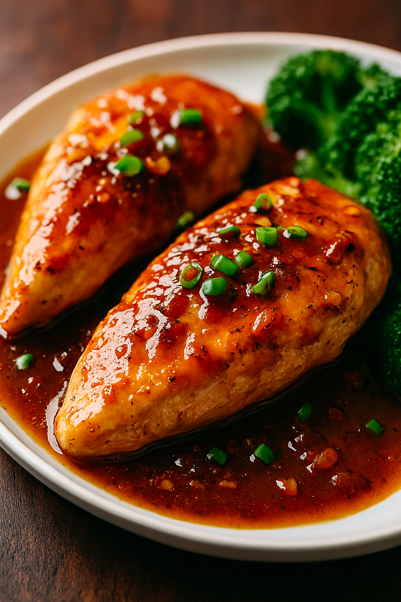

Chicken Plum Sauce

Here’s a flavorful recipe for Chicken in Plum Sauce that balances sweet, tangy, and savory notes beautifully. Easy Chicken in Plum Sauce (Skillet Style)
Ingredients:
- 4 boneless, skinless chicken breasts
- 1 tbsp olive oil
- 1 onion, chopped
- 3 garlic cloves, minced
- 1 cup plum sauce
- 2 tbsp soy sauce
- 1 tbsp honey
- 1 tsp grated ginger
- Salt and pepper to taste
Instructions:
- Heat olive oil in a large skillet over medium-high heat.
- Sauté onion and garlic until translucent
- Season chicken with salt and pepper, then sear each side until golden brown (about 5 minutes per side).
- In a bowl, mix plum sauce, soy sauce, honey, and ginger.
- Pour sauce over chicken in skillet, coating evenly.
- Cover and simmer on low for 15–20 minutes, until chicken is cooked through.
- Let rest briefly before slicing. Serve with steamed veggies or rice.
Optional:
- Marinate chicken in herbs and olive oil beforehand.
- Add lemon zest or caramelized onions for extra depth.
- Swap in chicken broth for part of the plum sauce for a richer base.
Home